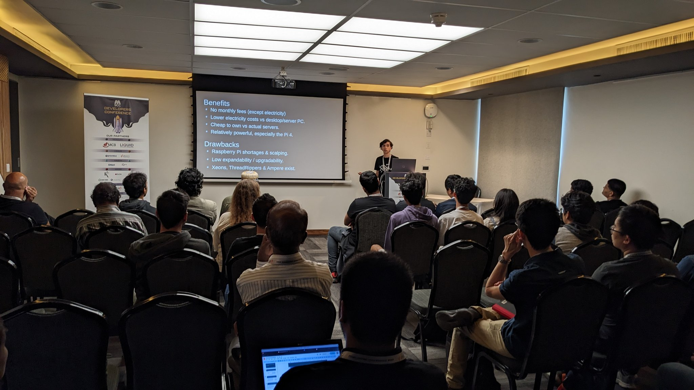
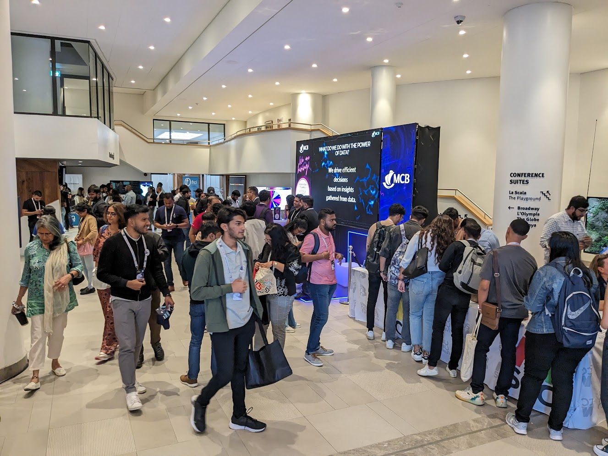

DevCon 2023!
Hello! Welcome to my blogpost for this year's DevCon. For those who have not read my previous blog on DevCon and don't know that DevCon even is, let me elaborate. DevCon, or rather Developer's Conference is a massive annual event for the developer or tech community here in Mauritius, organised by the MSCC (Mauritian Software Craftsmanship Community).
The event reunites developers and tech enthusiasts from all across the island to present on a variety of topics, including AI, Blockchain, web development or Linux.
This year was special for two reasons.
First of all, the MSCC, which started out way back in 2013 as a group of geeks eager to share and learn all sorts of things about tech, was celebrating its 10th anniversary. Furthermore, with 1502 attendees (the most ever), the team's massive ambition of 1500 attendees was achieved! An amazing anniversary gift as well.
The second reason is a lot more personal. While last year's DevCon was my first time as an attendee, this year was my first time as a speaker. I presented on cluster computing with Single Board Computers, but more on that later.
Day ONE: Thursday 20/07/23
Pre-Conference
I will forever have nightmares of waking up at 6:30. I don't even wake up this early to go to school! In fact, I had to get up this early because this year, my mother was helping at the registration desk, as part of the Squad and she needed to be at Caudan Arts Center for 8:00 am. And sadly, she was my only means of efficient transport, so no luck on getting to CAC by my own means.
The major disadvantage with having to leave early is that I was really running around like a headless chicken, making sure I had all my equipment. After all, my talk was on the very first day of the conference!
It is rather fitting that my talk mentioned redundancy in a cluster. Because boy did I have a lot of redundancy for my session. Two laptops, each with their chargers. The presentation had been copied to both. Two backup USBs of different filesystems, both with the presentation on them. And of course the presentation uploaded to the cloud. Everything had to go well. And while everything had been set up and put in my backpack the eve, I was still rushing around with final touches, making sure I did not forget anything.
Sessions Attended
1. Boosting Python With Rust! As an avid Python user, this talk by Abdur-Rahmaan Janhangeer was full with interesting tips and pointers about incorporating Rust in Python code to benefit from the added speed granted by the compiled language. Will definitely experiment with this!
2. How neural networks can learn almost everything! Sambhav Bholah did a great job at explaining the fundamentals of a neural network and how it is able to learn. I like AI and hold the CS50ai certificate from Harvard on EDX but this session was a nice complement to it.
3. Implementing Generative AI and GPT Today by Matthew Hood. Did I mention I love AI? An awesome presentation - very graphical and easy to understand. This was a great kickstart for people interested in learning more about the technology which has dominated 2023!
4. My Own (if that counts)!
My Session!
It would be totally inaccurate to say that I was not stressed since the morning. Actually, I was stressed since the eve. But at the same time, I was relieved that my session was finally here. In fact, I had been preparing this presentation, including the slides, since December 2022. I must give credit to Sandeep for helping calm my nerves at 11:30 pm the day before, it really helped me actually fall asleep!
My session was about Single Board Computer Clusters. That's a really long title, so let me explain. Single Board Computers are full PCs on a single PCB, like the Raspberry Pi. And clusters are a way of arranging individual computers for scalability and high availability. Instead of upgrading a single computer with the latest CPU and RAM, clusters allow expanding horizontally - essentially favouring quantity over quality.
I am really proud of my first ever presentation at such a conference, and I am really really happy that the audience came and learnt something new. I got loads of questions too, a few about myself, my ambitions, and my motivation. I am looking forward for more discussions in the future over my minicluster! Speaking of which, I can easily be reached on Twitter on @Alex_with_a_B or even better, on Telegram with handle "alexbissessur"

Day TWO: Friday 21/07/23

Pre-Conference
Same thing as the day before. Need to be there for 8:00 am. It was even harder to wake up, with the fatigue from the previous day weighing heavy. Staying awake till 11:00 pm to talk with Abdur Rahmaan about my cluster and presentation absolutely did NOT help!
Additionally, I got caught up installing Debian in a VM on my laptop for the Linux Bootcamp later in the day. Regardless, we made it to Caudan on time and my mum got to work at the registration desk.
Sessions Attended
1. Avish Cheetaram gave a really interesting presentation on harnessing the power of Docker. This was particularly relevant because, since I am learning Kubernetes, containers are an essential part of my roadmap.
2. Ah, Girish. He presented on setting up a secure VPN with Open Source tech. I don't use a VPN to connect to my cluster from outside my LAN - I don't connect to it externally at all in fact. This meant the session was even more interesting as I love homelabbing to begin with! Kudos to you Girish, you really knew your topic inside out, and the live demos were the icing on the cake. One of my favourite sessions of the whole conference!
3. I was going to lunch but decided against it because i3 seems interesting to me. Bad move. Not that the presentation was bad, not at all. But i3 is fundamentally a super complex user interface. As someone used to GNOME/KDE and who loves their pretty GUI, this was just *wow*. I was totally blown away by it all. I met Jain afterwards and he showed me his workflow in i3 which scared me just as much as it impressed me. I have had nightmares of being trapped in i3 ever since.
4. Linux Bootcamp by Ish, Derek, jain and Shravan. I don't know if it's obvious but I love Linux. I have ditched Windows a while ago and use a variety of distros, namely Arch (Desktop Gaming), Mint (1 laptop), SUSE (2 laptops), Armbian (cluster), and RPi OS (Raspberry Pi). I absolutely love playing around [and subsequently breaking] Linux, to such an extent I would like a job as system admin in the future XD
While I think I know a good amount in Linux, this 2-hour long session taught me a lot more about the intricacies. As Ish Sookun said later when I talked to him in the lobby, being in the sysadmin field requires full in-depth knowledge of the OS. This session was also one of my favourites, I just learnt so much. Like how to [REDACTED] the root password of a Linux system.
5. For the third consecutive hour, I sat on Tatooine. Ish and Zain hosted the talk on Linux Mirrors in Mauritius. Ish showed how important the mirrors are, drastically slashing latency and reducing our dependency on mainland Africa. Currently there are 9 Linux mirrors, with additional mirrors for some software like VLC. I won an OpenSUSE gecko plushie in the questions, when Ish asked how many Linux mirrors there are here.
Misc
By the end of the second day, there were around 1200 unique attendees! The problem though was that the organisers had stayed realistic and as such, there were not enough badges! The Squad started giving out blank leftover badges from last year's DevCon. Then from DevFest. Then from DevFest of previous years... All the old badges were being given out as they scrambled to get registration done.
Day THREE: Saturday 22/07/23
Pre-Conference
Getting out of bed in the morning was a challenge. I felt like a zombie, and, by the end of the day, I was ready to pass out from exhaustion. Actually, I was so tired that there is absolutely nothing of interest to mention from that morning. But, speaking about tiredness, all pictures you can find of me on the third day clearly show how kaput I was. Kudos to the DevCon Squad for still being on their feet!
Sessions Attended
1. Chaos Engineering by Purdaseea Dhaneshwursingh from SD Worx! It was really interesting to see how it is possible to orchestrate failures to test the robustness of your systems, and reduce the number of points of failure. As someone to whom chaos seems to come naturally, I was thrilled by the constructive capabilities of what has been destructive more times than I can count.
2. Panel Discussion hosted by Ish. Security and privacy, in my opinion, concerns everyone and it often baffles me how so many people completely disregard this crucial aspect of our lives in this digital era. The discussion was extremely interesting and shed light on a number of topics.
3. Can we make Kubernetes better? That's a good question and I was eager to know, having essentially presented on Kubernetes a few days ago. Logan from Cyberstorm.mu did a great job at not just highlighting the effort needed to contribute to the core Kubernetes project, but the challenges in contributing to Open Source projects in general. Sadly, I was only present for part of this session as I was a bit busy in the lobby.
I did not attend too many sessions on the third day because I felt too tired to learn anything, and I was also helping the Squad out in the lobby.
Misc
So you remember how day 2 saw the badges run out? Well day 3 was that but worse!
As I reached CAC early, I got to work helping at the registration desk, filling in the blank badges using the blue marker. They read "MSCC #DevConMu 2023". Those were given out to those registering until even the blank badges ran out. After that, the Squad started stamping people when they registered!
Later in the afternoon, I helped MJ by being the "police". This essentially meant guiding people to the registration desk because they didn't notice the giant orange REGISTRATION sticker on the pillar. I also did the pesky job of reminding people to show their badges (if they had them) and preventing outsiders from entering the event.
The problem with this was that I am not a very imposing person, neither in stature or voice. For MJ it's not that bad - she has a more authoritative (and scary) voice. Fortunately, I had only one really awkward encounter when an outsider tried getting in. When I told him he needs to register and that it's a private event, he got off with how he has a team of developers which uses technology like Kotlin or whatever else. Now, all respect to your team sir, but can you please get out of my face??? Dude was standing so close, I could smell the corporate deodorant on him, and had to crane my neck to look at him. And then he asked what technology this conference is about. Before I could even answer, he started listing whatever languages/frameworks he could think of, and started poking me with his finger. Why can't people respect others' personal space >:(
Finally, the guy left. Bloody hell, what an unpleasant bloke. He probably just saw me, a young person [who could be mistaken as a child] and wanted to show off and boost his massive ego. Creep.
Networking Hour!
Happy Hour, renamed as Networking Hour, is one of my favourite parts of the entire conference. Similar to last year, it was sponsored by Spoon Consulting, but differed as it was held at La Suffren, the hotel opposite the Caudan waterfront car park. This turned out to be a great decision because space was a limiting factor at Caudan Art Center, and would have been suffocating with the number of attendees this year. However, Networking Hour was set for only the first day, instead of the two days.
It started off with Jochen welcoming everyone, followed by a representative of Spoon Consulting addressing the people present. As an attendee, I am incredibly appreciative of the contributions by the MSCC and Spoon in order to bring this "hour" to us.
Much like last year, I was very awkward around people. After walking around and managing to talk for a bit with a few people, I found Ish, Shelly, their child, and Girish, and joined them. It was fun talking about OpenSUSE, Ish's Linux bootcamp, and my prospects with whatever I'll do after college.
I can't mention the networking hour without talking about the food. The good thing was that it was really good. Conversely, the bad thing was that it was really good. When the food arrived on the tables, discussions ended and everyone joined the long queues. Attendees were like piranhas swarming over the food, and the tables were cleared in mere minutes!
Entertainment Hour!
Organised by Fake Artist and bringing together a number of talented hair stylists from around the island, this show reunited fashion, dance, and music. The show revolved around the theme of space and the cosmos (the theme of DevCon this year) and the orchestrators absolutely nailed it with everything from the lighting to the music and audio effects. The show was overall a lot of fun, and I have loads of respect for the performants and the entire crew.

Closing Ceremony
"This year, I will win something at the closing ceremony" - myself. Yeah, that aged well.
As usual, the closing ceremony was very straight to the point, with Jochen thanking the sponsors. And of course, thank you Rogers Capital for the free internet! You can bet I used it to rub the fun of DevCon in the faces of all my friends who did not attend.
Afterwards was goodies! Between the number of raffle draws and the questions and all of that, I did not win anything.
Actually, the fact of me not winning anything at the closing ceremony is one of the constants in life and came as no surprise to me. However, I was really surprised when MJ and Shelly told me to sit in the front row before the closing ceremony started since, while I was not Squad, I had helped a bit at the registration desk.
This means that when the Squad was called on stage, I was dragged along! Next, the theme for next year's DevCon was revealed: Retro! I already have a good idea for a lighning talk on this topic XD
Finally, the cake was cut by the organisers, and everyone went back upstairs for a piece. After eating my slice, I was back in the amphitheatre to take another picture and help clean up. Then back home, absolutely exhausted. I was really happy for everything that had happened over the last few days, but also a bit sad that it was over. Oh well, next year now! Next thing is to finish my HSC exams!